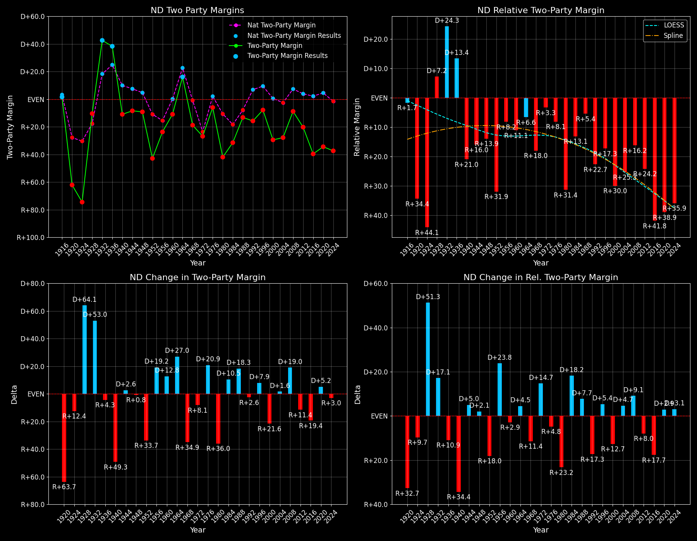

North Dakota (ND) — Statewide

Margins · 3rd-Party share · Pres. deltas

Relative margins · Relative 3rd-Party · Rel. deltas
North Dakota (ND) — Total Data
| Year | EVs | D | R | State Margin | Nat. Margin | Rel. Margin | Total votes |
|---|---|---|---|---|---|---|---|
| 1968 | 4 | 94,769(38.3%) | 138,669(56.0%) | R+17.7 | R+0.6 | R+17.1 | 247,682 |
| 1972 | 3 | 100,384(35.8%) | 174,109(62.1%) | R+26.3(Δ R+8.6) | R+23.5(Δ R+23.0) | R+2.7(Δ D+14.4) | 280,514 |
| 1976 | 3 | 136,078(45.9%) | 153,470(51.7%) | R+5.9(Δ D+20.4) | D+2.2(Δ D+25.7) | R+8.1(Δ R+5.3) | 296,766 |
| 1980 | 3 | 79,189(26.3%) | 193,695(64.2%) | R+38.0(Δ R+32.1) | R+9.9(Δ R+12.1) | R+28.1(Δ R+20.0) | 301,545 |
| 1984 | 3 | 104,429(33.8%) | 200,336(64.8%) | R+31.0(Δ D+6.9) | R+18.1(Δ R+8.2) | R+12.9(Δ D+15.1) | 308,971 |
| 1988 | 3 | 127,739(43.0%) | 166,559(56.0%) | R+13.1(Δ D+18.0) | R+7.7(Δ D+10.4) | R+5.3(Δ D+7.6) | 297,261 |
| 1992 | 3 | 99,168(32.2%) | 136,244(44.2%) | R+12.0(Δ D+1.0) | D+5.6(Δ D+13.3) | R+17.6(Δ R+12.3) | 308,133 |
| 1996 | 3 | 106,905(40.1%) | 125,050(46.9%) | R+6.8(Δ D+5.2) | D+8.6(Δ D+3.0) | R+15.4(Δ D+2.3) | 266,411 |
| 2000 | 3 | 95,284(33.1%) | 174,852(60.7%) | R+27.6(Δ R+20.8) | D+0.5(Δ R+8.0) | R+28.1(Δ R+12.8) | 288,267 |
| 2004 | 3 | 111,052(35.5%) | 196,651(62.9%) | R+27.4(Δ D+0.2) | R+2.5(Δ R+3.0) | R+24.9(Δ D+3.2) | 312,833 |
| 2008 | 3 | 141,403(44.5%) | 168,887(53.2%) | R+8.6(Δ D+18.7) | D+7.3(Δ D+9.7) | R+15.9(Δ D+9.0) | 317,738 |
| 2012 | 3 | 124,827(38.7%) | 188,163(58.3%) | R+19.6(Δ R+11.0) | D+3.9(Δ R+3.4) | R+23.5(Δ R+7.6) | 322,627 |
| 2016 | 3 | 93,758(27.2%) | 216,794(63.0%) | R+35.7(Δ R+16.1) | D+2.1(Δ R+1.8) | R+37.8(Δ R+14.3) | 344,360 |
| 2020 | 3 | 114,902(31.8%) | 235,595(65.1%) | R+33.4(Δ D+2.4) | D+4.4(Δ D+2.3) | R+37.8(Δ D+0.0) | 361,819 |
| 2024 | 3 | 112,327(30.5%) | 246,505(67.0%) | R+36.4(Δ R+3.1) | R+1.5(Δ R+6.0) | R+34.9(Δ D+2.9) | 368,155 |
Column explanations
- Δ
- Change (delta) in the value from the previous election year.
- Year
- Election year.
- EVs
- Number of electoral votes allocated to this state or unit.
- D
- Number of votes for the Democratic candidate (raw count(pct%)).
- R
- Number of votes for the Republican candidate (raw count(pct%)).
- State Margin
- Margin between the two major-party candidates, including third-party votes ((D - R)/total).
- Nat. Margin
- The national presidential margin for that year, including third-party votes ((D_total - R_total)/total_votes).
- Rel. Margin
- The presidential margin relative to the national presidential margin (Margin - Nat. Margin).
- Total votes
- Total voter turnout or ballots cast (when provided).
North Dakota (ND) — Third-Party Data
| Year | Other votes | State 3rd-Party Share | 3rd-Party Nat. Share | 3rd-Party Rel. Share |
|---|---|---|---|---|
| 1968 | 14,244(5.8%) | 5.75% | 13.59% | -7.83% |
| 1972 | 6,021(2.1%) | 2.15% | 0.09% | 2.05% |
| 1976 | 7,218(2.4%) | 2.43% | 0.33% | 2.10% |
| 1980 | 28,661(9.5%) | 9.50% | 6.98% | 2.53% |
| 1984 | 4,206(1.4%) | 1.36% | 0.12% | 1.24% |
| 1988 | 2,963(1.0%) | 1.00% | 0.21% | 0.79% |
| 1992 | 72,721(23.6%) | 23.60% | 19.23% | 4.37% |
| 1996 | 34,456(12.9%) | 12.93% | 9.68% | 3.25% |
| 2000 | 18,131(6.3%) | 6.29% | 3.65% | 2.64% |
| 2004 | 5,130(1.6%) | 1.64% | 0.84% | 0.80% |
| 2008 | 7,448(2.3%) | 2.34% | 1.38% | 0.97% |
| 2012 | 9,637(3.0%) | 2.99% | 1.62% | 1.36% |
| 2016 | 33,808(9.8%) | 9.82% | 5.54% | 4.28% |
| 2020 | 11,322(3.1%) | 3.13% | 1.84% | 1.29% |
| 2024 | 9,323(2.5%) | 2.53% | 1.88% | 0.65% |
Column explanations
- Year
- Election year.
- Other votes
- Number of votes for third-party (other) candidates (raw count(pct%)).
- State 3rd-Party Share
- Share of the vote received by third-party (other) candidates.
- 3rd-Party Nat. Share
- The national third-party share for that year (3rd-Party votes / total votes).
- 3rd-Party Rel. Share
- Third-party share relative to the national third-party share (3rd-Party share - Nat. 3rd-Party share).

Two-party margins · relative · deltas
North Dakota (ND) — Two-Party Data
| Year | 2-Party Margin | 2-Party Nat. Margin | 2-Party Rel. Margin |
|---|---|---|---|
| 1968 | R+18.8 | R+0.7 | R+18.1 |
| 1972 | R+26.9(Δ R+8.1) | R+23.6(Δ R+22.9) | R+3.3(Δ D+14.8) |
| 1976 | R+6.0(Δ D+20.9) | D+2.2(Δ D+25.8) | R+8.2(Δ R+4.9) |
| 1980 | R+42.0(Δ R+36.0) | R+10.6(Δ R+12.8) | R+31.3(Δ R+23.1) |
| 1984 | R+31.5(Δ D+10.5) | R+18.1(Δ R+7.5) | R+13.3(Δ D+18.0) |
| 1988 | R+13.2(Δ D+18.3) | R+7.8(Δ D+10.4) | R+5.4(Δ D+7.9) |
| 1992 | R+15.7(Δ R+2.6) | D+6.9(Δ D+14.7) | R+22.7(Δ R+17.2) |
| 1996 | R+7.8(Δ D+7.9) | D+9.5(Δ D+2.6) | R+17.3(Δ D+5.4) |
| 2000 | R+29.5(Δ R+21.6) | D+0.5(Δ R+8.9) | R+30.0(Δ R+12.7) |
| 2004 | R+27.8(Δ D+1.6) | R+2.5(Δ R+3.0) | R+25.3(Δ D+4.7) |
| 2008 | R+8.9(Δ D+19.0) | D+7.4(Δ D+9.8) | R+16.2(Δ D+9.1) |
| 2012 | R+20.2(Δ R+11.4) | D+3.9(Δ R+3.4) | R+24.2(Δ R+7.9) |
| 2016 | R+39.6(Δ R+19.4) | D+2.2(Δ R+1.7) | R+41.8(Δ R+17.7) |
| 2020 | R+34.4(Δ D+5.2) | D+4.5(Δ D+2.3) | R+39.0(Δ D+2.9) |
| 2024 | R+37.4(Δ R+3.0) | R+1.6(Δ R+6.1) | R+35.8(Δ D+3.1) |
Column explanations
- Δ
- Change (delta) in the value from the previous election year.
- Year
- Election year.
- 2-Party Margin
- Margin between the two major-party candidates, ignoring third-party votes ((D - R)/(D + R)).
- 2-Party Nat. Margin
- The national presidential margin for that year, including third-party votes ((D_total - R_total)/total_votes).
- 2-Party Rel. Margin
- The presidential margin relative to the national presidential margin (Margin - Nat. Margin).